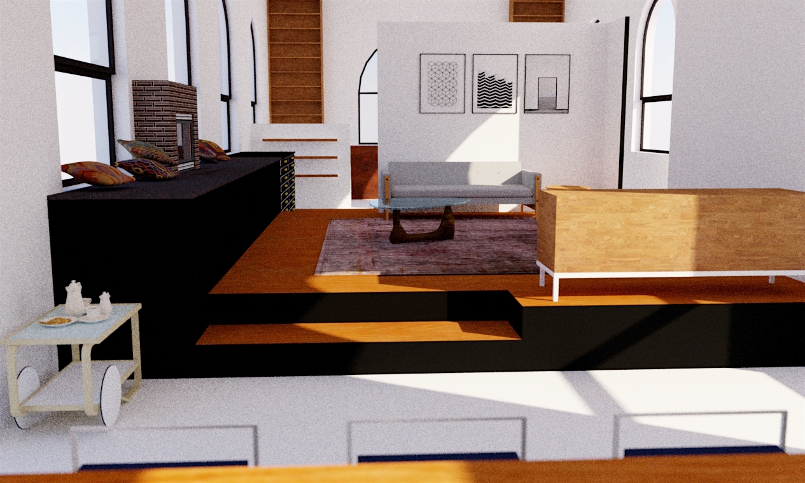
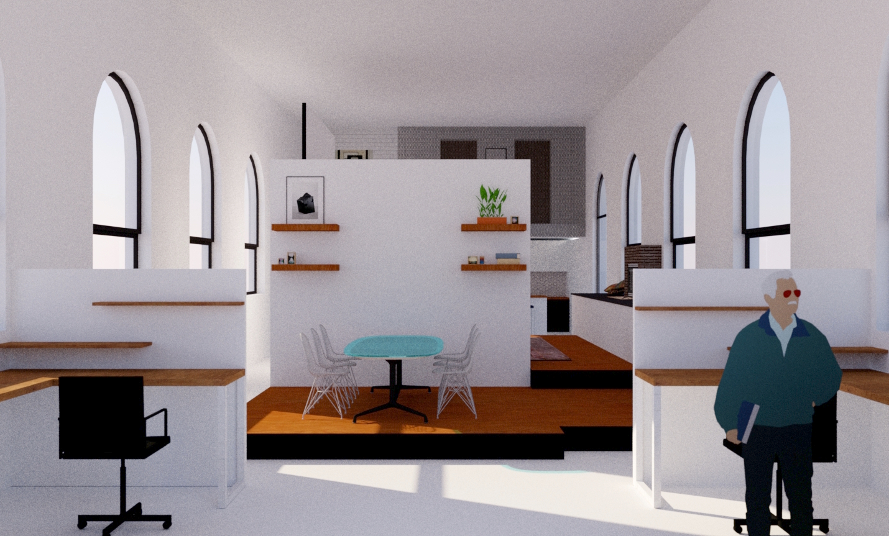
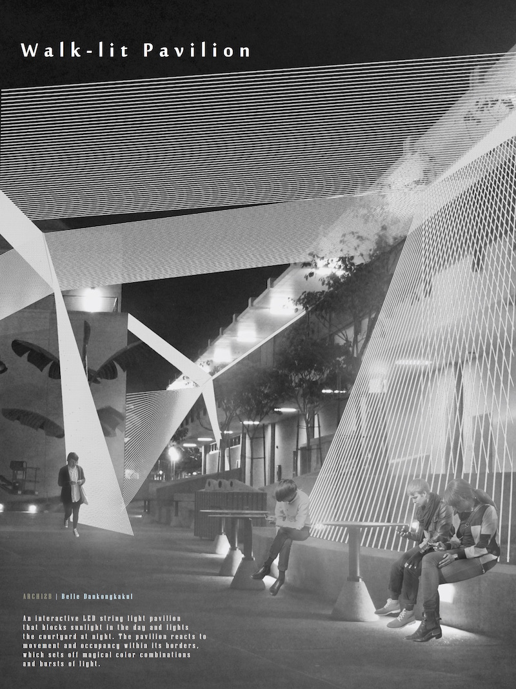
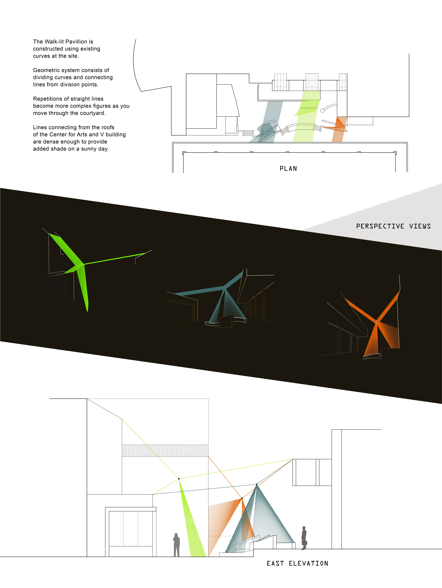
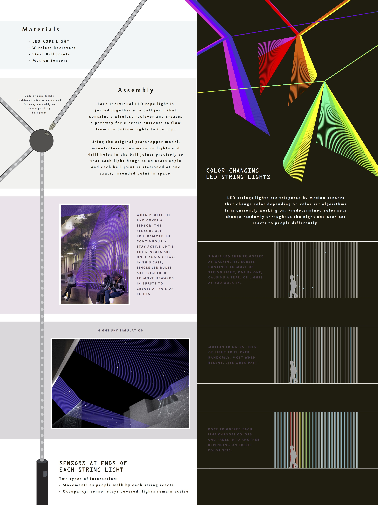

School Assignment | Design and print the graphic standard for a snack brand you have created.
- Design the logo
- Develop style of the entire brand
- Design and create marketing materials
- Layout and print graphic standard book
- Print and assemble packaging
Tools : InDesign, Illustrator, Photoshop


Live-Work Studio, 2015
School Project | Re-design the interior for a preexisting building in town to be both a home and work studio.
- Build 3D model of existing site from floorplans
- Layout new floor plan according to client and ADA requirements
- Design new look of interior
- Create 3D model of new design including all architectural elements and furniture
- Render model for graphic presentation
Tools : Sketchup



Walk-lit Pavillion, 2013
School Project | Design a pavillion for an open space on the Pasadena City College campus. Create architectural drawings and present your design in three posters.
- Build 3D model of existing site from floorplans
- Design a pavillion using Grasshopper in Rhinoceros